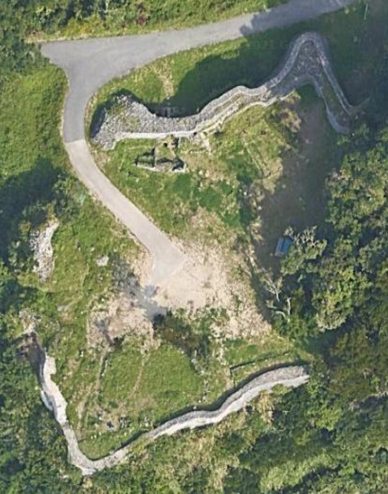

South - Nanzan
Included in this section
- ââChinen Castle
- ââGushikawa Castle (Itoman)
- ââItokazu Castle
- ââKakinohana Castle
- ââTamagusuku Castle
Chinen Castle (知念城跡)
ââ Good
Map data ©2021 Google
Castle Data
- Dimensions: 54 m x 41 m
- Constructed: 13th century
- Lat/Long: 26.1602, 127.8118
- Google Maps: Chinen Castle Ruins
- Elevation: 90 m
Points of Interest
- Chinen Castle Ruins
- Tomb of Lord Chinen
- Chinen Spring
- Ufakaru (origin of Okinawa rice cultivation)
Getting There and Parking
- By car Navigate to the Chinenjoato Parking Lot (知念åŸè·¡é§è»Šå ´) which is just off Hwy 331 in Chinen, Nanjo City.
- Cafe Curcuma (カフェくるくま) is just up the road from the parking lot and has great views. You'll also find them on Yelp. Hours: 11am-6pm M-F and 11am-7pm Sat, Sun and Holidays. http://curcuma.cafe/menu.html
- There are a couple food options as well as souvenirs in the Minamishiroichi Sight Seeing Information Center.
- Chinenjoato Castle site
- Chinen Ajinohaka Tomb
- Miya Place of Worship
- Ufuya Place of Worship
- Chinen Ukka Spring
- Ufakaru Legendary Ricefield
- Kamiyamanoton Sacred Place
- Ufakaru (rice origins)
- The Tomb of Lord Chinen
- Chinen Ukka (spring)
Where to Eat
Side Trip
Sefa-Utaki: is the holiest site in Okinawa, and less than 3km away, it's fabled to be the location where the god Amamikyu landed on Okinawa who later built Chinen and Tamagusuku castles. Purchase tickets from the Minamishiroichi Sight Seeing Information Center (南城市観光協会), and then walk the 400m to Sefa-Utaki.
Maps - Chinen Castle

Map data ©2021 Google
Overview - Chinen Castle
Chinen Castle is located on the south-east side of Okinwas South-East of Naha in Nanjo City (南城市). The castle is about 75m x 50m in area and at an altitude of 80m. This site is peaceful and usually tourist free and has the feel of a nature walk.
When visiting Chinen Castle Ruins, you'll notice the original walls are darker, the rocks are smaller and less regular. In contrast, the newer and/or reconstructed walls are made from limestone masonry, and are smoother and fit together well. The walls are about 3m high, and the gates still have stone arches, now shored up with timbers. The eastern side is the old castle, and the western side is the new castle. The newer section was built by King Sho Shin (尚真) who reigned 1477-1526, and later would unify the three kingdoms by confiscating all weapons and moving all Aji and their families to the Shuri Castle area.
The area around Chinen Castle Ruins also hold the Tomb of Lord Chinen (知念按司の墓), Chinen Spring (aka Chinen Aqueduct 知念大川), and the Ufakaru (ウファカル) which is believed to be the original location of rice cultivation in Okinawa.
Chinen castle was one of the holy sites on the Agariumai pilgrimage, which was historically taken by Okinawan royalty from Shuri Castle east to Chinen in the 1300's. In 1970 it was designated a National Historic Site.
On The Trail - Chinen Castle
Park at the Chinenjoato Parking Lot, it's marked by a bilingual "Chinen Castle Site", parking sign with the international blue and white "P". The elevation of the parking area is about 110m, which is slightly above Chinen Castle, which stands at about 80m.
Across the road by the guard rail, you'll see the "Chinen Castle Ruins" sign with a brown arrow pointing down and to the right, indicating the trailhead. At the trailhead two informational boards stand; the left hand all-Japanese info board is summarized here:
"Chinen Gusuku Historical Site The site consists of two castles; Mii-gusuku (newer), and Kou-gusuku (older). The site underwent some construction during a period 1761-1903, and is a historical site for religious/cultural pilgrimage."The right hand info board, has English translations and explains the history and significance of the area;
Chinen Gusuku Guide Map
This is a settlement at the foot of Chinen Gusuku, and it was an area governed by the high priestess Kikoe Ogimi during the Ryukyu Kingdom period. Together with Tamagusuku it is said that the area was also the point of origin in rice cultivation. This is an area where there are many shrines and wells, and it can be said that this is a place where the spirit of ancient times, when people had their daily life closely connected with the cultural assets, still prevails in this area.
The Otsunahiki Tug of War in Chinen takes place every five years. It was discontinued in 1958, but it was revived in 2003.
The right hand board lists 7 points of interest in the area, of which, only 1,2,5 & 6, shown highlighted below are at the Chinen Castle site:
The asphalt path runs gently downhill about 150m from the trailhead to the castle, and is bordered by jungle growth that almost meets overhead and affords some welcome shade with the sounds of the local birds.
Within sight of the castle, on the right hand side is a white marker with Japanese for "Noro Mansion Ruins" (ãƒãƒå±‹æ•·è·¡), this was the home of the priestess or "Noro". The trail is a small loop that enters and comes out ahead on the path about 6m (20') down the road between a low stone wall that has tree roots growing from it. As you approach Chinen Castle, there is a stone monument on the left with the name in Japanese (知念城跡). A stone ramp with a few low steps rises up to the main gate, which is shored up with wood beams holding up the stone arch. There are actually two gates on this north side, the main gate here and a second further down the road. Enter the main gate, and you'll get a sense of how thick the walls are. You have entered the "new" castle area. If you were to follow the wall to the left (east), you'd enter the tree covered area that was the old castle. After you pass through the main gate, the 2nd gate is up along the wall to your right and next to the hinukan, which is the location of the house fire spirit. Check out the 2nd arched stone gate, then take the path that leads to the top of this main wall. When you're ready make your way back down, and walk across the flat grassy area inside the castle to the far wall, which is lower and take in the views out to the ocean. Make your way back to the road and as you continue down it, you'll see a trio of brown signs for:
Continue past the signs and you'll see a path off to your right with some low stone steps, up to the Ufakaru, the traditional location of the first rice cultivation in Okinawa. Make your way back down and continue along the road, the pavement will end, and become a green tunnel of jungle that heads downhill, and eventually opens up to the Chinen Ukka (spring) area, that has ancient stone floor sand walls, and just past this you'll see a white information marker, for the spring;
Chinen Ukka
The Chinen Ukkaa's source is a spring called the "Ufakaru", and lies under the cliff behind it. In the "Chuzan Seikan" (History of Ryukyu)(1650), it is written that "Amamikiyo (the creator of the Ryukus) planted rice in the rice paddies behind the Chinen Ukkaa and the Ukinji Hainju site (Two natural springs, once called "received water", the other called "running water") in Tamagusuku". From this, the Chinen Ukkaa became a holy site where the Ryukyu King came personally to worship, and is now part of the present Agari Umaai.
And underneath this description, a 2nd description is of the Agari Umaai pilgrimage;
The origins of the Agari Umaai
The "Agari Umaai" is a pilgrimage to sacred sites in Chinen and Tamagusuku, wehre it is said that the Amamikiyo Zoku (people of the goddess Amamikiyo), the ancestors of the people of Okinawa, settled. Since the areas of Ozato, Sashiki, Chinen and Tamagusuku, with Shurijo Castle as their center were collectively called the "Agarikata", this pilgrimage to the sacred sites in Chinen and Tamagusuku was thus called the "Agari Umaai". The Ryukyuan king personally made pilgrimages to Kudaka Island, which was believed to be where wheat and rice cultivation originated.
From here you can take the trail that heads uphill to the Tomb of Chinen, which is a small stone shrine. From here you can work your way back downhill which may be harder than going up, make your way back to the spring, then to the castle, and finally to the parking lot. Now it's time for refreshments and maybe a side trip.
Gushikawa Castle (具志川城跡) (Itoman)
ââ Good

Map data ©2021 Google
Castle Data
- Dimensions: 36 m x 76 m
- Constructed: 13 - 15th century
- Lat/Long: 26.0802, 127.6643
- Google Maps: Gushikawa Castle
- Elevation: 5 m
Points of Interest
- Two Part Castle
- Warrior lookout platform
- Blowhole
- Sea cave under the castle
Getting There and Parking
- Navigate to Gushikawa Castle which is almost at the very southern tip of the island, about 2km south west of Hwy 331 in the Kyan/Itoman area. Parking is free and has room for about 8 vehicles. There are no restrooms. The nearest restrooms are at Cape Kyan/Kyan Lighthouse about 1 km east.
- The Rest House 優ç¾å ‚ (Yubido) is near the Himeyuri Memorial Tower on Hwy 331, https://www.yubido.jp, 372-2 Ihara, Itoman, Okinawa 901-0344, Japan. It has soba, bento and old fashion unglazed pumpkin donut holes (kabocha sata andagi). Hours: 10am-7:30pm.
- Cave under the castle: worth a look if you are comfortable using the steep limestone path down to the coral, you'll want to have good shoes and it's only accessible at low tide.
- Swimming Hole / Cliff Diving Rock: For the even more adventurous, to the east about 200m along the coral is the popular swimming / snorkeling hole and cliff diving spot.
Where to Eat
Side Trip
Maps - Gushikawa Castle

Map data ©2021 Google
Overview - Gushikawa Castle
Well if good things come in small packages, this is it - a tiny castle perched on 3 cliffs overlooking the sea. There are actually two Gushikawa Castles in the Okinawan archipelago, this one is in Itoman City, along the Kyan coast.

Photo by Captain76/PD
The castle was built by the Aji (local leader) of Kume Jima who fled his island for Okinawa. The construction occurred between the 13th and 15th centuries over a natural karstic sea cave with a blowhole. The castle is surrounded by cliffs on three sides with an area of 60m x 30m. The oldest parts of the walls are loosely piled in the nozura-zumi (stacked-stone) building style. Because very few relics have been uncovered here, it's thought that this castle may have been abandoned for another. There are two sections to the castle joined by a "warrior" walkway / lookout. The gate area on the north side is made from cut stone.

Photo by Captain76/PD
This area is also a popular surfing and fishing spot. There is a very steep, rough path on the east end (left side as you approach the castle) that leads down the cliff to the cave and tidepools. About 200m to the east of the castle along the coral, is a popular swimming / snorkeling hole and cliff diving spot that is accessible at low tide. In 1972 the castle was designated as a National Historic Site.
On The Trail - Gushikawa Castle
The roadside parking lot can accommodate about 8 cars. A vertical stone monument for Gushikawa Castle (具志川城跡) in Japanese and an all Japanese bronze plaque are on the right hand side of the path that leads to the castle. On the left side are two additional signs. The blue information sign is bilingual and says,
Gushikawa Castle ruins The gusuku castle is built on the coastal cliffs on Kyan on the southernmost tip of Okinawa Island. The castle on the landward east side is made of cut stone, which the walls on the cliff side are of piled natural stone. There's a blowhole that connects to the sea. It's said to have been built by the lord of Kumejima Gushikawa Castle who fled from Kumejima. Apart from the area around the east side gate, the castle faces the sea on three sides, offering a superb view over the Pacific Ocean.
Next to this is an additional brown sign in Japanese, that loosely translates to,
Ruins of Gushikawa Castle The ruins of Gushikawa Castle are located at the southernmost tip of Okinawa Island. It is built about 17m above the sea, except near the castle gate. It has a unique location with cliffs on three sides. Inside there is a hole called, "hiifuchimii" (ヒ—フチミ—) that leads to the sea. The ruins are dated 12th to 15th century, and was used sometime in the middle of this period. There are additional castles nearby: Sakei Gusuku (佐慶グスク), Uezato Gusuku (上里グスク), Yamagusuku Gusuku (山城グスク), Tukahena Gusuku (束辺名グスク), Toma Gusuku (当間グスク), and Kyanfuru Gusuku (喜屋æ¦å¤ã‚°ã‚¹ã‚¯)"
From the parking lot, make your way down the 200' path toward the castle. Notice if you were to continue straight there is a break in the guard rails and a scrabbly path leads down to the water and cave. Be cautious if you are thinking about this climb, it's tough and you'd want to only be on the coral flats at low tide. There is a cave at the bottom that travels under the castle. If the surf is up, you may catch a glimpse of surfers. Follow the trail between the two sides of the gate, and enter the castle. You'll see a barrier set up around the blow hole, which drops down into the cave below. A brown marker nearby reads,
Hiifuchimii (fire pit)
It is called ‘hiifuchimii' (fire pit) in the local dialect. It is a hole that has been dug down to the empty cave of limestone below. It is located in the heart of the castle. According to the legend it is used in the event of an emergency, or for the lifting or lowering of goods. It was not used to enter the castle. ※ Danger. Attempts to go up or down here have a risk of falling.
You'll also see a number of yellow signs in Japanese that warn of the danger of climbing and wall collapse. A number of brown plaques are scattered about, that describe the architecture, one reads,
Stairs and Warrior Path
Steps and a platform allow the guards to look down the cliffs and along the coastline. The platform was built at the top of the wall and has a great vantage point.
A second sign reads,
Stone Piling Method
Mason's explain that the wall is laid down in a ‘U' cross section shape then filled in. This gives the wall a better aesthetic when viewed from the exterior.
Climb up to the platform for a view. You are now at the narrowest spot that connects the two parts of the castle. Make our way over to the second part that is a large grassy area. A brown plaque reads,
Platform and Tiger Mouth (stairway)
The platform and stairway have a different structure and appear to have been constructed during different periods.
Make your way around the perimeter to take in the views. Another plaque reads,
Height of the Stone Walls
The stone wall surrounds this cape, the eastern portion is narrower and lower, and wider and higher on the western parts. The warriors (æ¦è€…) would have run up top of the walls to keep watch. The western side is also made with larger stones.
The plaque just before heading back up the stairs reads,
Old Stone Steps
The platform and steps were built during different times, the steps are more ancient, and the platform is a high point of the castle.
Climb the stairs, over the platform, down to the first section with the blowhole. At this point if it's low tide and you're wearing sensible shoes, and up for an adventure, you might consider the side trip to the cave below or the swimming / snorkeling hole and cliff diving spot that's 200m east along the coral.
Itokazu Castle (糸数城)
ââ Good

Juniper, CC BY-SA 4.0
Castle Data
- Dimensions: 130m x 145 m
- Constructed: 14th century
- Lat/Long: 26.1516, 127.7627
- Google Maps: Itokazu Castle Ruins
- Elevation: 180 m
Points of Interest
- Original undulating walls
- Itokazu Aji Tomb (糸数按司乃墓)
- Cut stone gate
- Ramp up the wall
Getting There and Parking
- Distance:15 km east of Naha / 29 km south of Okinawa City.
- Car Route 1: Gusuku Road Eastern pavilion parking Lot (グスクãƒãƒ¼ãƒ‰æ±å±‹é§è»Šå ´), and walk west through the Kurayashiki Ruins (蔵屋敷跡) to the Itokazu Castle Ruins.
- Car Route 2: Itokazu Aburuchigama (Cave) 糸数アブチラガマ, visit the monument, then walk south (there are signs) along the path to Itokazu Castle Ruins.
- Parking:Free
- Restrooms:Itokazu Nōson Park (糸数農村公園) - 500 m north-west
- https://www.city.nanjo.okinawa.jp/movie_library/movie_en/1579322539/1579324306/
Where to Eat
- Kintaro (沖縄そば金太郎),Funakoshi-1197 Tamagusuku, Nanjo, Okinawa 901-1400, Japan. http://www.kintaro-okinawa.com. Hours: 11am-5pm.
Side Trip
- Kuryashiki Ruins (蔵屋敷跡) - co-located
- Itokazu Abuchiragama (糸数アブチラガマ) Cave - 450 m
- Stone Lion (Akagumuya Exit) (石ç…å) - 450 m
- Itokazu Stone Shisa #2 - 800 m
- Kamankaji (カマンカジ) Spring & Itokazu Hija (糸数樋川) Spring - 850 m
- Neishi Castle Ruins - 1.1 km
- Funakoshi Castle Ruins - 2.0 km
Maps - Itokazu Castle
Map data ©2023 Google
Overview - Itokazu Castle
This is the largest castle ruins in the southern part of the island. It is on a limestone hill and plateau at an altitude of 180m, with an area of 131m x 146m. A cliff is on the south west end and the plateau stretches north east. The castle was built in the first half of the 14th century to protect the areas west of Tamagusuku. It was the residence of Itokazu Aji, the third son of Tamagusuku Aji. According to local legend, the castle was being expanded, and the local warrior, Higa Uchou (比嘉ウチョウ) set out to Kunigami (in the north of Okinawa) for building supplies (trees/lumber), but sadly never made it as he was ambushed and killed by the Aji of Uema. Oh, the dangers of being a local warrior. Pottery from the 13th century has been found here, as well as 9th century Chinese artifacts that might have been considered antiques (treasures) in the 13th century. Although this castle has a bit of an abandoned feel to it, it’s really nice to see its long, multi-tiered walls still intact. You’ll see beautiful cut stone & piled stone wall sections. In 1972 the ruins were designated as a national historical site.

岩浪陸, CC BY 3.0
On The Trail - Itokazu Castle
From the street you’ll see a sign that says “Itokazu Castle Site 300 m”. Take the turn and the paved road heads uphill, and soon turns to dirt. The trees begin to thin out, and the serpentine walls of Itokazu Castle rise up on your left and then unexpectedly, the dirt road passes through the wall into a makeshift parking area. Just before the road makes a left turn, you’ll see a vertical marker and informational plaque on your right. The marker says Itokazu Castle Ruins (糸数城跡), and the adjacent plaque reads:
Itokazu Castle RuinsThis castle was built on a cliff on the south side of present day Itokazu village. There is a legend that says it was probably built in the first half o f the 14th century, during the time of the three kingdoms. The walls are made of both cut stone and piled stone. Chinese pottery and relics have been discovered on the grounds. Designated historic site: May 15, 1972
The smaller trail that passes to the right of the marker is a long, level grassy area and leads to a lookout from the hilltop. Head back to the monuments, and continue on the main dirt road, and just as it passed through a 2nd wall, take the trail to the right between the trees, and you’ll see the main nozura-zumi (rubble) style wall up ahead. Check out the main gate to the right and see how the rock texture is so different with its smooth, angular nuno-zumi (Ashlar masonry) cut blocks.
If you’ve seen the Shuri castle gates, you can imagine how a wood frame for a gate and doors would have fit right in the vertical grooves in the stone. Further down the wall on the right, the area has Japanese “Entry Prohibited†signs. Pass through the gate, and get your bearings. You are now outside the inner bailey. Straight ahead, through the trees, are the Kurayashiki Ruins (蔵屋敷跡). Those are mostly at ground level in a large grassy field. On the left, the outer wall is fairly smooth, however the right side of the outer wall has a few interesting features. Head to the right, and notice the two massive squarish sections that jut out from the wall, and may have been topped by guard houses. Investigate the outerwall on both sides of the gate, and when ready, return to the gate. Pass through the gate, and head to the right, and you’ll notice a massive ramp that is part of the wall, that gives you access to the top of the wall. Take in the views of the surrounding countryside and the white dome of the Okinawa Meteorological Observatory radar. As you look down at the wall construction, you’ll see there are up to three tiers of stone, this would have ostensibly reduced the stone required to construct the wall, and allowed for walkways and storage at different levels. When ready, make your way back to the ground. If you’re interested, the somewhat modern tomb of Itokazu Aji is about halfway between the squarish outcroppings in the outerwall and the stone monuments for the castle. Itokazu is another quiet gem, you’ll typically have the place to yourself, and it makes for an easy day trip.

Shig ISO, CC BY 2.0
Kakinohana Castle (垣花城跡)
ââ Good
Map data ©2023 Google
Castle Data
- Dimensions: 60 m x 80 m
- Constructed: 14th century
- Lat/Long: 26.1483, 127.7930
- Google Maps: Kakinohana Castle Ruins
- Elevation: 130 m
Points of Interest
- Hill top, jungle ruins
- Nozura walls
- Two bailies
- Trails on some walls
- Stone steps to shrine
Getting There and Parking
- Distance:16 km south-east of Naha / 31 km south of Okinawa City.
- Car:Using Google maps, navigate to: Kakinohana Castle Ruins (垣花城跡).
- Parking:There is only street parking here at the trailhead. There is parking at the Kakinohana Hija (Spring).
- Restrooms:The closest restrooms are about 200 m north-east at Kakinohana Rural Park, Kakinohana-169 Tamagusuku, Nanjo, Okinawa 901-1400, Japan.
Where to Eat
- Cafe Lodge, Kakinohana-8-1 Tamagusuku, Nanjo, Okinawa 901-0601, Japan. Hours: W - M 11:30 am - 5 pm, closed Tues. http://cafefuju.com
Side Trip
- Kakinohana Hija (Spring)
- Nakandakari Hikawa (Spring)
- Ukinju Hashimizu (stone arch)
- Mibaru Beach
- Chinen Castle

Bryan Tan, CC BY-SA 4.0
Maps - Kakinohana Castle

Map data ©2023 Google
Overview - Kakinohana Castle
Legend has it that Kakinohana Castle was built by the 2nd son of the Aji (chief) of Minton in the 14th century. This 60 x 80 m castle is built on a limestone hill at an elevation of about 130m. Its walls are built in the nozura (stacked stone) style. Most of the views are now blocked by the overgrown trees/jungle, but that adds to its charisma, this castle definitely has an Indiana Jones feel to it with the tree roots reaching deep into the walls. In 1961 the castle ruins were designated as a historic site by the Okinawa Prefecture government.

Bryan Tan, CC BY-SA 4.0
On The Trail - Kakinohana Castle
This trail is a bit of a scramble/jungle adventure. If you follow the Lat/Long coordinates you’ll see the white stone monument/plaque for Kakinohana Castle on the road that runs perpendicular away from Cafe Lodge. If you were to start at Cafe Lodge at your back you would walk/drive about 100 m north-west, and the sign would be on your left.

Bryan Tan, CC BY-SA 4.0
The plaque loosely translated says:
Kakinohana Castle Ruins
The castle ruins consist of a 1st and 2nd bailey. From the highest point in the castle you can see the Pacific Ocean. This history of the castle is unclear as there is no clear historical record. From this castle, Shikiya Castle (志喜屋城) is to the east. Minton Castle (ミントングスク) to the south, and Tamagusuku Castle Ruins (玉城城跡) to the west.
Make your way up the rocky, uneven path between the trees to the small clearing, you’ve just passed through where the castle gate would have stood. It may not look like it now, because it’s overgrown, but this was the lower bailey.

Bryan Tan, CC BY-SA 4.0
There are a few partially collapsed nozura (stacked stone) type walls here.

Bryan Tan, CC BY-SA 4.0
You’ll also notice additional trails, some steeper, some along the top of the walls. Make your way generally in a south west direction, uphill to the 1st (inner) bailey, which is about 3m higher.

Bryan Tan, CC BY-SA 4.0
Toward the back is a small stone lantern, but otherwise a pretty quiet and peaceful setting.

Bryan Tan, CC BY-SA 4.0
Explore the area and see if you can discover the rough stairs that lead up to the small tomb. If you get turned around on the way back down, and end up on the road, you may have exited just north of the trailhead, in that case, you can follow the road to the right and it will lead you back to the white plaque.

Bryan Tan, CC BY-SA 4.0
Tamagusuku Castle (玉城城跡)
ââ Good

Captain76, Public Domain, via Wikimedia Commons
Castle Data
- Dimensions: 116 m x 66 m
- Constructed: 13 - 14th century
- Lat/Long: 26.1442,127.7810
- Google Maps: Tamagusuku Castle Ruins
- Elevation: 150 m
Points of Interest
- Conch-shell shaped gate
- Summer solstice alignment of gate and utaki
- Ryukyu religion pilgrimage stop
- Nozura-zumi (rubble) and nuno-zumi (fitted stone) walls
- Sacred tree grove
Getting There and Parking
- Distance:15 km south-east of Naha / 31 km south of Okinawa City.
- Car:Using Google maps, navigate to: Tamagusuku Castle Ruins (玉城城跡).
- Parking:Dirt parking lot at the trailhead just off Gusuku Road.
- Restrooms:500 m west at Gusuku Road Park, Nakayama Tamagusuku, Nanjo, Okinawa 901-0605, Japan.
Where to Eat
- Okinawa Soba Kintaro (沖縄そば金太郎), Japan, 〒901-0618 Okinawa, Nanjo, Tamagusuku, Funakoshi−1197. Hours: 11 am - 5 pm, closed Wed. http://okinawasoba-kintarou.net/
- Okinawa Soba Mine (沖縄そば 峰), Japan, 〒901-0605 Okinawa, Nanjo, Tamagusuku, Nakayama−310-1. Hours: M - F 11 am - 3 pm, S, Sun 10:30 am - 3 pm. https://www.minesoba.com/
Side Trip
- Kakinohana Castle Ruins (垣花城跡) - 1.5 km
- Itokazu Castle Ruins (糸数城跡) - 2.7 km
- Mibaru Beach - 3 km
- Garugah Fall (ガルガー滝) - 4 km
- Chinen Castle (知念城跡) - 5.2 km

Dwcarlso, CC by SA 4.0, via Wikimedia Commons
Maps - Tamagusuku Castle
Map data ©2023 Google
Overview - Tamagusuku Castle
Tamagusuku Castle is part of a trio of sites that have special historical significance for the Ryukyuan religion. The other two sites being: Sefa Utaki and Chinen Castle. These three make up a pilgrimage route known as the “Agari Umaai”. Legend has it that the Ryukyuan goddess, Amamikikiyo first came down to earth at Tamagusuku Castle. The main gate’s entrance is constructed with a natural stone arch shaped a bit like a conch-shell (horagai - 法螺貝), although to me it looks a bit like a heart or an oven mitten. During Summer Solstice (June 21th), it’s a popular spot to watch the sun-rise through the gate when the sunbeam illuminates the utaki (place of worship). It’s a breezy hilltop castle with great views out to the ocean and local fields (and golf course).
Bryan Tan, CC BY-SA 4.0
On The Trail - Tamagusuku Castle
From Gusuku Rd, on the South side of Ryukyu Golf Course, you’ll see a small road sign for Tamagusuku-jo Site. Pull into the dirt and grass of the Tamagusuku Castle Ruins Parking Lot, and get your bearings. You’ll notice the land rises on your right through a grove of trees, up to the hilltop castle. There are a couple of stone monuments on the right side of the parking area near the sidewalk under the trees.
The information monument with the map reads:
Tamagusuku Castle Ruins
This castle is also known as Amatsuzu Castle, and the date of its construction and successive lords are uncertain. “Shimajiri Gunshi”, describes that “There is a legend that the castle was built by Amamikiyo, and it is said that the lord of the castle was a descendant of Amamikiyo, that is Tenson†The ruins of the castle are stepped mountain castle consisting of three enclosures, the first, second, and third built on the natural fortress. Only the 1st citadel retains its original shape, white the 2nd and 3rd citadel walls were taken away after the war to be used as aggregates for the construction of the US military base, and now only the base stones are left. The 1st citadel is located in the East-North-East, and the castle gate is carved out of a rock, and the castle enshrines the Agaru Mi-ibe and Tsureru Mi-ibe utaki. Prefectural ordinances prohibit changing the area without permission. March 25, 1985 Tamagusuku village, Prefectural Board of Education. Designated Historic Site: June 15, 1961. Area: 21, 811 m2
There’s a small map in the bottom left corner of the monument, and fun fact, the shape of the remaining inner bailey’s wall is roughly the same shape as the main gate - which is said to resemble the outline of a conch-shell (horagai - 法螺貝).
Make your way toward the back of the grassy area and you’ll notice a path on your right that leads into the pleasant grove of trees. Enjoy the shade on the trail, while getting ready for the leg workout on the next part of the trail.
From the bottom of the wooden staircase, Tamagusuku Castle appears as though it’s just a hill-top mini-castle, but remember it would have been made of three concentric baileys which are now sadly gone.
Take the staircase, and at the first landing where the stars make a hard right, look to the left and take note of the three tomb-like structures that are places of worship.
From this same spot look up ahead, along the ground on the left of the rising stairs and see if you can make out the old stone road that runs parallel. These are similar to the angled stone paths at the rebuilt Urasoe Castle gates.
After 50 or so more steps, you’ll be at the top of the landing. Catch your breath, and ponder the natural stone arch gate and natural stone along the right side of the gate. Just below this landing on the hill are the remnants of former walls that would have formed another ring around this side of the castle. The wall to the left of the gate is built in the nuno-zumi (Ashlar masonry) cut blocks style.

Dwcarlso, CC BY-SA 4.0
From the top of the staircase you have a great view out to the ocean, the golf course below, and surrounding land.

Captain76, Public domain, via Wikimedia Commons
When ready, ascend the last few, narrowing stone steps and pass through the main gate’s arch. The threshold narrows so much that really only one person can pass at a time.
During summer solstice (June 21st), this becomes a popular spot to watch the sunrise as the beams pass through the gate and illuminate the utaki - or holy places inside the castle.
The utaki are straight ahead, marked with piles of stones, and off to the right, a small peaked concrete structure, on the dais with three wide stone stairs.
Look back through the main gate and see what shape the gate reminds you of.

Mocchy at Japanese Wikipedia, Public domain, via Wikimedia Commons
Inside this 1st bailey, the walls are nozura-zumi (rubble) style, and as you face the gate, the wall to the right has two levels. You can almost imagine a sentry walking along the lower level, keeping a watchful eye on approaching visitors.
There are some Japanese language signs in this area advising, “Dangerous: Please do not climb the stone walls”, although occasionally not everyone obeys these, please remember to be a good cultural ambassador.

Dwcarlso, CC BY-SA 4.0
Check out the area, and notice the nooks and crannies with interesting natural limestone formations and piles of rubble.
Make your way around to the back, and mind your step as the railing is just a suggestion. The space is pretty limited, and this inner bailey would have likely been the living area for the local Aji, his family and servants.
When ready, make your way back down and check Tamagusuku Castle off your list of stops on the “Agari Umaai†pilgrimage route.